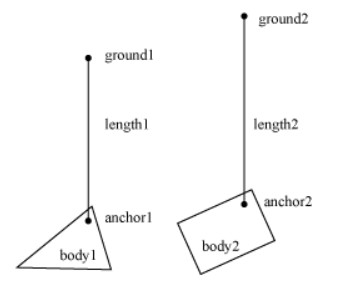

Creates a PulleyJoint to join two bodies to each other and the ground.
The pulley joint simulates a pulley with an optional block and tackle. If the ratio parameter has a value different from one, then the simulated rope extends faster on one side than the other. In a pulley joint the total length of the simulated rope is the constant length1 + ratio * length2, which is set when the pulley joint is created.
Pulley joints can behave unpredictably if one side is fully extended. It is recommended that the method setMaxLengths be used to constrain the maximum lengths each side can attain.

Function
| Available since LÖVE 0.8.0
|
| This variant is not supported in earlier versions.
|
Synopsis
joint = love.physics.newPulleyJoint( body1, body2, gx1, gy1, gx2, gy2, x1, y1, x2, y2, ratio, collideConnected )
Arguments
Body body1- The first body to connect with a pulley joint.
Body body2- The second body to connect with a pulley joint.
number gx1- The x coordinate of the first body's ground anchor.
number gy1- The y coordinate of the first body's ground anchor.
number gx2- The x coordinate of the second body's ground anchor.
number gy2- The y coordinate of the second body's ground anchor.
number x1- The x coordinate of the pulley joint anchor in the first body.
number y1- The y coordinate of the pulley joint anchor in the first body.
number x2- The x coordinate of the pulley joint anchor in the second body.
number y2- The y coordinate of the pulley joint anchor in the second body.
number ratio (1)- The joint ratio.
boolean collideConnected (true)- Specifies whether the two bodies should collide with each other.
Returns
PulleyJoint joint- The new pulley joint.
Function
| Removed in LÖVE 0.8.0
|
| This variant is not supported in that and later versions.
|
Synopsis
joint = love.physics.newPulleyJoint( body1, body2, gx1, gy1, gx2, gy2, x1, y1, x2, y2, ratio )
Arguments
Body body1- The first body to connect with a pulley joint.
Body body2- The second body to connect with a pulley joint.
number gx1- The x coordinate of the first body's ground anchor.
number gy1- The y coordinate of the first body's ground anchor.
number gx2- The x coordinate of the second body's ground anchor.
number gy2- The y coordinate of the second body's ground anchor.
number x1- The x coordinate of the pulley joint anchor in the first body.
number y1- The y coordinate of the pulley joint anchor in the first body.
number x2- The x coordinate of the pulley joint anchor in the second body.
number y2- The y coordinate of the pulley joint anchor in the second body.
number ratio (1)- The joint ratio.
Returns
PulleyJoint joint- The new pulley joint.
See Also